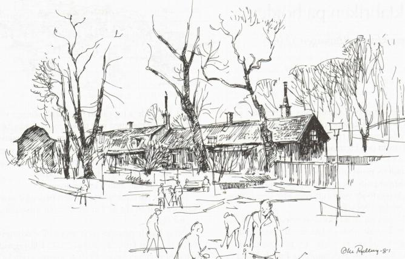

|
Ekermanska malmgården, Sköldgatan
 Vid den forna infarten från Ringvägen till Tanto sockerbruk, ligger tätt intill stambanan Ekermanska malmgården från 1750-talet. Den långsträckta och panelade, faluröda timmerbyggnaden i en våning har vindsvåning under brutet tak. Samuel Ekerman, gift med bryggaråldermannen Johan Falcks dotter, ärvde 1742 detta stycke mark av sin svärfar. Egendomen gick i arv till den som troligen låtit bygga den malmgård vi ser i dag, Samuel Ekermans son, borgmästaren Carl Fredrik Ekerman. Hans levnadsbana slutade samma år som Gustav III mördades. Efter flera generationer Ekermannar blev stället efter mitten av 1800-talet krog och senare butik. Huset delades omsider upp i smålägenheter och hyrdes ut till arbetare. Stockholms stad tog till slut över gården och har efter 1973 låtit Högalids hembygdsförening få disponera huset. Där sysslar man nu med bland annat slöjd, vävning och liknande. På vippen att trilla över kanten ner på järnvägsspåren balanserar ett litet nätt lusthus i trädgården. I sådana små paviljonger satt 1800-talets vistspelande och punschdrickande herrar och mådde gott i pipröken, avskilda i sin egen värld. Så här kan vi spekulera kring lusthusets forna funktion, men får då flytta gubbarna till Malmqvistska malmgården (riven 1964) vid Torkel Knutssonsgatan 22. Där hörde paviljongen ursprungligen hemma. Efter en tillfällig vistelse på Skinnarviksringen 4 flyttades den till Tanto. Hembygdsföreningen har rustat upp det lilla huset. Intilliggande Tantogården med servering och miniatyrgolfbana domineras vid mitt studiebesök på eftermiddagen av en speciell publik. Det är medelålders män med viss resignation i blicken och rycka-på-axlarna-attityd. De rör sig försiktigt, sökande, och ser trötta och lite handfallna ut. Trevande blickar, nästan generade leenden bryter ibland tungsinnet i deras ansiktsuttryck. De rör sig med osäkra och långsamma tag. Varifrån kommer dessa slitna män, som ett gott stycke före pensionsåldern är lediga mitt på dagen för att spela golf? Vi ska inte avundas dem deras frihet. De tillhör den utslagna skara av alkoholiserade, nerknarkade eller mentalt skadade, som fått en fristad på Tantos ungkarlshem i träbarackerna ett stycke längre fram på Ringvägen mot Rosenlundsgatan. Ett "hotell", som i sitt slag, år 1981, ansågs vara det sämsta i hela Stockholm. Minimala utrymmen, enkelrum på sju kvadratmeter och extremt lyhört, slagsmål och fylla. Vi behöver inte leta oss tillbaka till 1800-talet för att i dagens Stockholm forna fall för slumsystem Elsa Borg att ödsla omsorg på. Stilla och lugnt är det också i den gamla gården som ligger och trycker inpå Årstabron. Vid stranden nedanför låg på 1910-talet ett båtvarv som tillverkade småbåtar, men som under första världskriget försåg försvaret med några minsvepare med träskrov. (Ur Se på Söder, Olle Rydberg, 1986) |